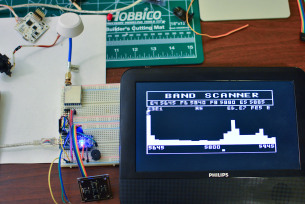
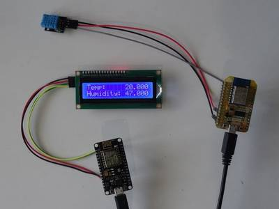
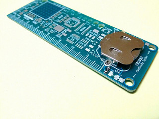
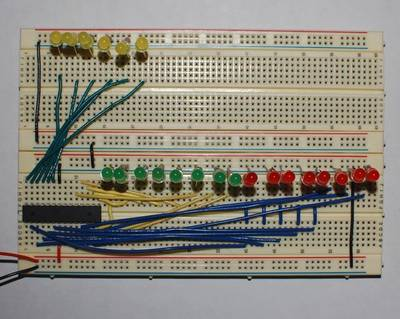

2016-01-28 - Nº 39

Editorial
Aqui está a Newsletter Nº 39 no seu formato habitual. Agora às quintas-feiras. Se gostar da Newsletter partilhe-a!
Todas as Newsletters encontram-se indexadas no link.
Esta Newsletter tem os seguintes tópicos:
Esta semana foi anunciado que um programa de computador conseguiu bater os melhores jogadores no jogo Go. Foi um programa que se baseia na nova geração de algoritmos baseados em "Machine Learning". A Atmel anunciou o substituto do famoso ATmega328P - a Versão ATmega328PB. Por fim a Sony adquiriu o Altair Semiconductor, empresa israelita inovador na tecnologia de modems LTE.
Esta semana apresentamos diversos projetos de maker e na rubrica "Documentação" apresentamos quatro livros (eBooks) que podem ser descarregados livremente e que esta semana são sobre Carpintaria e Juntas em Madeira, a especificação da linguagem de programação Java, um livro sobre a mudança de Python para Guile Scheme e um livro sobre Blender.
 João Alves ([email protected])
João Alves ([email protected])
O conteúdo da Newsletter encontra-se sob a licença  Creative Commons Attribution-NonCommercial-ShareAlike 4.0 International License.
Creative Commons Attribution-NonCommercial-ShareAlike 4.0 International License.
Novidades da Semana ^
AlphaGo: Mastering the ancient game of Go with Machine Learning
"Games are a great testing ground for developing smarter, more flexible algorithms that have the ability to tackle problems in ways similar to humans. Creating programs that are able to play games better than the best humans has a long history - the first classic game mastered by a computer was noughts and crosses (also known as tic-tac-toe) in 1952 as a PhD candidate’s project. Then fell checkers in 1994. Chess was tackled by Deep Blue in 1997. The success isn’t limited to board games, either - IBM's Watson won first place on Jeopardy in 2011, and in 2014 our own algorithms learned to play dozens of Atari games just from the raw pixel inputs. But one game has thwarted A.I. research thus far: the ancient game of Go. Invented in China over 2500 years ago, Go is played by more than 40 million people worldwide. The rules are simple: players take turns to place black or white stones on a board, trying to capture the opponent's stones or surround empty space to make points of territory. Confucius wrote about the game, and its aesthetic beauty elevated it to one of the four essential arts required of any true Chinese scholar. The game is played primarily through intuition and feel, and because of its subtlety and intellectual depth it has captured the human imagination for centuries."
-
"The high-performance Atmel® ATmega328PB is an 8-bit AVR RISC-based microcontroller (MCU) with picoPower® technology. It combines 32kB ISP Flash memory with read-while-write capabilities, 1kB EEPROM, 2kB SRAM, 27 general purpose I/O lines, 32 general purpose working registers, five flexible timer/counters with compare modes, internal and external interrupts, two USARTs with wake-up on start of transmission, two byte-oriented 2-wire serial interfaces, two SPI serial ports, 8-channel 10-bit A/D converter, programmable watchdog timer with internal oscillator, a unique serial number and six software selectable power saving modes. The device operates between 1.8-5.5 volts."
Sony Acquires Altair Semiconductor, Israeli Innovator of LTE Modem Chip Technology
"Sony Corporation is announcing that it has reached an agreement with Altair Semiconductor and its major shareholders to acquire the company. The purchase price is 212 million U.S. dollars (approximately 25 billion yen), and Sony expects to complete the acquisition in early February, 2016. Altair, an Israel-based company, owns modem chip technology and related software for LTE (Long Term Evolution), a 4G cellular standard for mobile devices. Altair develops and sells products focused on LTE technology, and its modem chips stand out for their low power consumption, high performance and competitive cost. "
Ciência e Tecnologia ^
Tiny electronic implants monitor brain injury, then melt away
"A new class of small, thin electronic sensors can monitor temperature and pressure within the skull – crucial health parameters after a brain injury or surgery – then melt away when they are no longer needed, eliminating the need for additional surgery to remove the monitors and reducing the risk of infection and hemorrhage. Similar sensors can be adapted for postoperative monitoring in other body systems as well, the researchers say. Led by John A. Rogers, a professor of materials science and engineering at the University of Illinois at Urbana-Champaign, and Wilson Ray, a professor of neurological surgery at the Washington University School of Medicine in St. Louis, the researchers published their work in the journal Nature."
Physics Professor David Hall and Team First to Tie Knots in Quantum Matter
"Physicists have long predicted the possibility of tying knots in quantum fields. But no one has been able to make or observe a three-dimensional quantum knot, until now. In a breakthrough discovery explored in a paper published in Nature Physics, one of the most prestigious journals in physics, a scientific team led by Amherst Physics Professor David S. Hall ’91 and Aalto University (Finland) Professor Mikko Möttönen have found a way to create knotted solitary waves in a quantum-mechanical field. The discovery builds on their recent work on Dirac monopoles and isolated monopoles, and is yet another extraordinary step forward in understanding the nature of quantum fluids. The isolated monopole research in particular, Hall says, led to the quantum knot discovery."
Designer crystals for next-gen electronics
"Liquid is often seen as the kryptonite of electronics, known for damaging and corroding components. That’s why a new process that uses vapour– rather than liquid – to grow designer crystals could lead to a new breed of faster, more powerful electronic devices. The method, invented by an international team of scientists from the University of Leuven in Belgium, the National University of Singapore and CSIRO has been published today in the journal Nature Materials. For the first time, the researchers have shown how the designer crystals known as ‘metal organic frameworks’ or MOFs, can be grown using a vapour method that is similar to steam hovering over a pot of hot water. The crystals are the world’s most porous materials, and if applied to microelectronic devices, could significantly boost their processing power. "
Documentação ^
A documentação é parte essencial do processo de aprendizagem e a Internet além de artigos interessantes de explorar também tem alguma documentação em formato PDF interessante de ler. Todos os links aqui apresentados são para conteúdo disponibilizado livremente pelo editor do livro.
Livros

"This instructional manual on the art of carpentry and joinery was originally published in 1905. It outlines the skills and basic knowledge necessary to become competent at woodwork, and includes chapters on 'Timber', 'Plane Geometry', 'Tools', 'Wooden Roofs', and much more. This is an excellent informative work, complete with many diagrams to aid understanding. Here is a short extract from the author's preface that explains his aims: 'The simplest types of construction have been dealt with most fully, and the principles they embody have been emphasised continually. Without going into great detail, these rules have then been applied to more complicated examples; for a long experience has convinced the author that a student who has grasped the fundamental facts of a subject requires a minimum of guidance in more advanced work.' A specially commissioned new introduction on the history and uses of woodwork has been added to the republication of this work."
"Official Java language specification for Java SE 7 edition is available online to view as HTML and download as PDF. This is the best FREE resource in Java, as it's from source and contains most up-to-date details about Java Programming language."
"After 6 years of intense Python-Programming, I am starting into Guile Scheme. And against my expectations, I feel at home."
"Blender 3D: Noob to Pro is a product of shared effort by numerous team members and anonymous editors. Its purpose is to teach people how to create three-dimensional computer graphics using Blender, a free software application."
Modelos 3D ^
Com a disponibilidade de ferramentas que permitem dar azo a nossa imaginação na criação de peças 3D e espaços como o thingiverse para as publicar, esta rubrica apresenta alguns modelos selecionados que poderão ser úteis.
Todo-lister / awesome todolist guide - transform anything into a todolist :D (http://www.thingiverse.com/thing:1270477)
Transform anything into a todo-lister with the TodoLister v3. The leap make it easy to user on any kind of paper / book / notebook Thin enough to be in any backpack or desk, strong enough... Can be used with ballpen pencils and any king of writing material.
(first version had no leap... second version holes were too small, this is the perfect one, use it everyday)
Soldering board holder (http://www.thingiverse.com/thing:1239018)
I needed a tool to hold a pbc while soldering. There are many holders to buy, but... hey, I got a 3D printer! So this is it...
Tabletop thickness and holder width can be parametrized. For STL attached I set them to 18 and 10mm.
Pegstr - Pegboard Wizard (http://www.thingiverse.com/thing:537516)
Infinite ways to create pegboard holders and bins for tools or display objects. Highlights:
One or multiple (m•n matrix) objects per holder Round, square or rectangular with rounded corners Generate various shapes of bins and trays (closed bottom) Chose between stronger or economical, straight or tapered, etc Can be partially open (to click / snap in objects) and angled up or down Note: if you intend to use this for commercial purposes please contact me. Example objects:
https://youtu.be/gb9It1dF2z4 http://youtu.be/T17yfQddx3c
Projetos Maker ^
Diversos Projetos interessantes.
An Intro and Antennas
"Welcome to the world of wireless know-how in the form of amateur or "ham" radio. Where else can you be an electronics and programming whiz, study solar and atmospheric phenomena, design your own communication system, and provide valuable public service — all at the same time? Amateur radio and the Nuts & Volts readership have a lot in common. Let's get to know each other! I’m thrilled to help return ham radio to the pages of Nuts & Volts! In every other issue, I’ll be discussing some aspect of ham radio technology that you can use on your workbench and in your projects — whether you have (or get!) a license or not. Over the years, NV has featured ham radio in articles and columns so ham radio was never truly absent. The magazine’s editor is a ham (NU1N) and Paul Verhage — maven of the high altitudes and Near Space columnist — is also known as KD4STH. Many of the authors hold an amateur “ticket,” so maybe they will share their call signs with us in future articles. You may be surprised at how widespread amateur radio really is!"
One Board Minimalist Chair
"This chair design is old. Some say it dates back to the the mid 1700's with Mountain Men roaming the US. Some call it a Viking chair and claim it is a Medieval design. For certain it popped up in Boy Scout camps in the US in the early 20th century. Leave a comment about the oldest you've seen!"
Datalogging Accelerometer Data To An SDCard
"MindForge put together an EMG logger to study and track his dad’s Parkinsons disease. He moved away from it as it was not impractical to wear EMG electrodes all day. However, the project was a good base to build his datalogger project which logs accelerometer values to an SDCard."
$1 Motor Driver Circuit for Arduino
"The story of this motor shield is that I wanted to make a robot for my multifunctional brainwave controlled system and I decided to share this with you. It's a very simple circuit I used the L293D IC that is a dual bridge motor driver IC. I also added an output for a servo motor. Finally this circuit was able to control 2 DC motors or 1 stepper motor and a seerco motor."
5.8GHz (RX5808 Module) open Source FPV Receiver

"First-person view (FPV) is a method used to control a radio-controlled vehicle from the driver or pilot’s view point. Most commonly it is used to pilot a radio-controlled aircraft or other type of unmanned aerial vehicle (drone). The vehicle is either driven or piloted remotely from a first-person perspective via an onboard camera, fed wirelessly to video fpv goggles or monitor. At the price of 9 dollars the BOSCAM rx5808 receiver module is very popular in the FPV RX (receiver) builder scene. By default it supports only 8 channels with dip switch. But by using it with SPI interface and Arduino with rx5808-pro open source setup it becomes a comfortable deluxe RX with nice autoscan and a spectrum anlyser."
The Interactive Donation Box
"Donation boxes can be much more interesting and attractive when you combine them with electronics and a little bit of programming. This instructable will show you how to. As the name explains, making donation boxes interactive can help you gain much more attention and make people happy at the same time! Indeed, and awesome way to set up a charity and help the needed ones by installing it in shopping complexes and other public places (if a bigger version of the same is made). This was just a prototype to present the basic idea which when modified and used at a bigger level, can definitely help. The following project uses an arduino for all it's processing. The RGB LEDs installed inside the box keep on flashing and changing colors which can attract much attention. When a person donates a coin, the ultrasonic sensor installed just on the box detects that and the servo present at the top waves 2-3 times with a 'Thank You' message displayed. This feature can surely bring a smile on the person's face who just donated that coin! Using only arduino and some other basic parts, you can make this project within 3-4 hours max. without the need of hunting the parts. Although a bigger version of the same would be much better, but that doesn't mean that this small one is useless. Even this one can be put at various places."
Remote Wi-Fi DHT11 Temperature

"ESP8266 modules are great low cost stand alone controllers with built in Wi-Fi, and I already made a simple Blink instructable with ESP8266 NodeMCU module. The advantage of the ESP8266 over Arduino and other controllers is the builtin Wi-Fi. In this Instructable I will show you how with the help of Visuino you can use two ESP8266 modules to make a remote LCD Display for Temperature and Humidity DHT11 sensor."
NeoBracelet by the Brain
"I've been dreaming of a reasonable way to make a bracelet full of neopixels for a while now. I finally realized a way to do it so I will share my process with the world. I only made my own random blinking code so if anyone would like to write custom code for a nice animation or another neat idea, please send me a message on g+. This project takes a normal bracelet and basically makes it "taller" by stacking items on top. So the final product is going to look a tad more beefy compared to most bracelets. But with the batteries I used, it should stay powered on for at least 8 hours."
Arduino TFT Forecast Weather Station with ESP8266
"This project, builds on Wunderground weather forecast via the Internet."
How to Make a Mini Battery Powered Soldering Iron
"To do a mini Battery Powered Soldering Iron you need!!!"
Infinity Mirror Clock Making
"Making an infinity mirror clock is a very fun proccess. Anybody can do it and once you finish it you will be amazed!"
Maker's Rule-The Feature Packed PCB Multi-Tool

"It has been a while since i posted my Tinker Rule which i made during college days. I received a few requests for the ready to etch pdf which helped me gauge if this seemed to be useful to people. The response was somewhat positive and so, i decided to put in some extra effort and make it handy, portable and manufacturable ! My initial scale was big and not handy, So, this one should be small and compact and must not miss a single feature from its ancestor."
Silc Circuits: High Performance Conductive Silicone
"RUBBERY CONDUCTIVE FUN! Build Waterproof, Wearable, Bouncy, Heatproof, Low-Resistance, Transparent, Indestructible circuits! Plus it's real easy to do, and requires few exotic materials! The goal here is to open up an amazing material, Silicone, that is becoming more and more accessible to the DIY community to the wonderful possibilities of electronics. DIY Conductive materials (conductive thread, paint, glue, fabric) have let craftspeople incorporate electronics in their project in uncountable fun ways. In the way that soft circuits let makers explore digital technology while utilizing the amazing properties of textiles, I think silicone circuits (silc circuits) have the potential to open another arena of physical-digital crafting in sculpture, wearables, prosthetics, toymaking, and special effects."
Building a low cost wifi camera
"Sometime ago I came across the Arducam Mini which is quite a nice camera module from UCTronics. It is a small PCB with a two megapixel OmniVision OV2640 sensor, an interchangeable lens and an FPGA to do the heavy lifting of image processing and JPEG encoding. Priced at around 24 Euros (lens included) you can easily buy a few without hurting your wallet and combined with an ESP8266 you can build quite a low cost wifi camera. Or several. Because designing and building PCBs is both fun and inexpensive I designed a board to go with the ESP8266/Arducam Mini combo, aptly named the Esparducam. And uniquely named too, try googeling for “esparducam“."
Photoplethysmography - (IR Heart Rate Monitor)
"This Instructable documents how to create a simple heart rate monitor using Photoplethysmography with an IR phototransistor via transmissive absorption using the Arduino to process the pulsatile data and display live results via a TFT screen. To use the source code and create the necessary circuitry you will need a reasonable grasp of electronics, knowledge of the Arduino, a DMM and some patience. The design has been optimised to work with easily obtainable 'off the shelf' commercial parts and re-purposed household items and gives reasonable results."
Building a Reflow oven
"I’ve recently had a need to produce a number of PCBs with a large number of surface mount components. After having struggled to hand solder the components, I decided to build a reflow oven and use solder paste. There are a number similar projects on the web, after looking at these I put together my own reflow oven based on a cheap toaster oven."
Bluetooth Controlled Outlet (Home Automation)
"Have you ever left the house and wondered if you forgot to turn off the lights or the TV? Or been driving home in the dark and wish the lights would be on before you get in the house with you hands full of groceries. A simple solution I have found is to create your very own smart outlet! A cheaper solution than leaving your lights on and easier than walking in the dark. Home automation is a relatively new idea that security system companies are adding to their packages. This could prove to be expensive if you own an old home or impossible if you rent or live in a dorm room. One night I was laying in my bed in my college room and wished I had a way to turn off the lights instead of walking across the room flipping the switch and stumbling across my messy floor. While I laid in my bed that night I had the bright idea to see what other people were doing on YouTube to see how hard it would be to control my room with my phone. Imagine your galaxy phone (or iPhone, if your one of those people) being able to act as Jarvis from Iron Man. Here is a overview video of home automation; What is Home Automation?"
DC Output Solid State Relay
"This project has been designed around TLP250/352 which is Opto-Coupler IGBT/MOSFET Gate Driver from Toshiba and Mosfet IRFP260 from IR, This relay consists of optically isolated gate driver and low impedance Mosfet. The combination of low resistance and high load current handling capabilities make this Relay suitable for a variety of switching applications. These devices are ideally suited for controlling high voltage and current DC loads with solid state reliability while providing 3750V isolation from input to output."
Another RetroBall!
"Well it’s great to see that people are still making their own version and the latest addition has been made by forum user Ulf Maier. He has kindly provided some photo’s of his build which happens to be a super cheap coffee table from ikea. Ulf also found a fault in my PCB design where I accidentally missed one track from the microcontroller to the LED display, details of this can be found HERE. The potentiometer knobs were even 3D printed, and he has added his own implementation of brightness control which makes it great for playing in all sorts of lighting conditions."
Multiplexing Made Easy with the MM74C925N
"I often find myself using seven segment displays in my projects, as they possess a retro look. Not only do i like using them but i also like making them. Through my encounters with seven segment displays i have learnt the many ways to control them with Arduino. These are probably the ones most people are familiar with, I personally used the shift register method until i found the MM74C925N. One day whilst making a purchase of LED's from my favourite LED supplier (led sales), I noticed they were selling a chip labeled as a "4-digit counter with multiplexed 7-segment display output drivers" this immediately sparked my interest and I bought 4 of them considering they were only $1.6 AUD. When I received them I got on my computer and looked up some tutorials on how to use them with Arduino, but I found nothing. I typed the chips name into the search engine but all i found was data sheets. Finally after reading a couple data sheets and looking at the schematic of a project some one had built 30 yrs ago, I worked out how i could use the MM74C925N with Arduino."
Low Cost IC Test Clip for PIC ICSP
"I made the Low Cost IC Test Clip for ICSP of PIC Microcontrollers."
PiSP Pi Station Portable, A Raspberry Pi Gaming Handheld
"It's amazing that you can buy a small computer like the Raspberry Pi for under $50. However what do you do with a small cheap computer like this? Make yourself a retro gaming handheld emulator of course! There are many projects out there already that inspired me to make my own Raspberry Pi Handheld, but unlike mine many need tools that many people don't have easy access to such as 3d printers and laser cutters. I made mine to be made with the simplest of tools and minimal experience needed. This doesn't make it easy, but you should be able to pick everything up as you go."
DIY TIC TAC POWER SUPPLY
"In this instructable I am going to show you the DIY TIC TAC POWER SUPPLY. It Is Capable of supplying upto 35v from 5v. We can also measure voltages with it"
Component Tester - Test almost anything !!
"Being an Electronics student or hobbyist, you may have thought of getting a tester that could test almost anything "THE ELECTRONICS COMPONENTS, OBVIOUSLY!!" Now what if I tell you that you can have one and that too made by yourself under INR 600 only (USD 10). Coming upon COMPONENT TESTER so it can test almost everything, obviously not the power components because they require more current and power which our AVR Microcontroller couldn't handle !! Oh yeah, I forgot to tell you guys that we would be using an ATMEGA328 for our build !!"
Ball and Plate Arduino PID Control
"This is my homemade Ball & Plate system. System consist of 2 digital servo motors (HS-422 ECO), microcontroller Arduino UNO, and 4 wire resistive touchscreen (7"). There are two PID controllers working separately for each axis. This system can move any ( heavier ) round element to any point of the surface to an accuracy of ± 2 mm ."
Arduino Dot Matrix Game Console
"Smart phone & iPad gaming is great and all love Candy Crush & Angry Birds, but nothing can touch the charm of making a game console by own and play with it. It was 2003 when I got a Nokia 3310 mobile phone and I used to play Snack game of Nokia which was very popular that time. I made the game console using ATmega328P and bi-color dot matrix display and I was inspired by the game of Nokia phone. I think you will like it. So, let's start to make it."
High Voltage EPROM Man
"Meet EPROM Man. He has an EPROM body, bulb socket head, with a 16MHz crystal for eyes, fuses for arms, fuse clips for hands, adjustable caps for knee caps, and MOSFET feet. He was inspired by a similar robot that my Father in Law made many years ago."
Easiest Water level Indicator
"In day to day life storing water is one of the important task we have to do & with that we need to keep eye on that storage that the supply of water should be stopped when its reaches to its maximum level ,so this is best, cheapest & easiest circuit to do this task by just looking at LED indication from your working place to control strong of your water level."
22 Bit binary counter for Atmega328

"This program will not work on an Arduino Uno. It makes use of features of the Atmega328 chip that are not available on the Arduino. The pins on the 328, and all Atmel microcontrollers, are arranged in banks of eight. The "D" bank is available but you only have full access to the one bank. There are only six pins available on the "C" bank, the analog input pins, because one of them is not broken out and the other is the reset. Two of the pins on the "B" bank are taken up by the crystal. It is possible to run the chip without the crystal and have full access to all eight pins on the "B" bank. There is an internal R/C network that can be used to clock the chip. The chip will run at eight MHz instead of sixteen. This is usually not a problem because most Arduino programs do not need the speed anyway. Also the internal clock is not as accurate. The tolerance specified in the datasheet for the ATtiny85 is +/- ten percent while most crystals have a tolerance of 30 PPM. I would assume that the 328 is the same but I could not find it in the 328 datasheet. (The datasheet is hundreds of pages of very dry reading.) There is a very good chance your chip will not be off anywhere close to ten percent. This collection of instructables includes a test of the internal clock in the ATtiny85 chip. and explains how parts are tested to assure they are within tolerance."
USB NeoPixel Deco Lights (via Digispark / ATtiny85)
"For this Instructable we need a WS2812 LED strip, also known as NeoPixel, and any MCU that could be programmed via Arduino. I use Digispark, it is a very nice tiny MCU based on ATtiny85. It has a special bootloader called Micronucleus which provides the ability to upload a program directly trough USB."
Arduino Video Game (The DIY Gift)
"Ever wanted to make your own video game? Saw some of your friends make cool projects and want to compete them? Want to impress someone with this gift? Then you are at the right place! Here we'll make a LCD game using a 2x4/2x16 LCD and a 2x4 3D printed setup!"
World's Loudest Arduino Intruder alarm
"I am such a guy who loves his thing very much and specially i don't like any one coming to my work space without my prior knowledge,mostly if the persons are my sibling or young kids.I need a way to make an alarm to help me protect my space and guard it properly. But buzzer are too low in volume to implement.Until i got this . A freaking loud siren from DNA technology. It was so loud that i had to wear plugs before i had to turn it on."
Distance Detector with Buzzer and LED meter
"This is a simple distance detection circuit with the use of an ultrasonic sensor, a buzzer, a row of LEDs, and 2 relays (optional). The ultrasonic distance sensor will light a row of LEDs depending on distance. Then if a change in distance is detected, that exceeds your threshold, a buzzer will sound and the optional relays can toggle a device (a light). All options are configurable such as the threshold, number of LEDs, maximum perceived distance, etc..."
Nextion Arduino Project: Whac-A-Mole Crazy Cony Game
"Nextion display is a seamless HMI solution that can make your interface talking to a process, machine, application or appliance. It uses just one serial port to do communicating. It can be applied to various projects. And I can see unlimited potential in it. Today I am going to show you my recent Nextion project- a funny Whac-A-Mole game called Crazy Cony."
555 Based DC Motor Speed Controller
"555 DC Motor Speed Controller project will control the speed of a DC motor connected to it. This project is built using the popular 555 timer IC."
Cloud Connected Sensors With Arduino
"Sensors that can connect to the cloud have all sorts of useful applications in systems that depend on easy or remote access to data. This tutorial will show you how to build an Internet of Things application that logs data from a temperature sensor and sends email alerts to specified individuals when the temperature falls outside an expected range. Although we chose to use a temperature sensor here, any type of sensor could be used in this connected application."
ARDUINO By Myself Mini-CNC (Plotter)
"In This project I will guide you on how to easily build your own Mini-CNC machine and with a low cost (using arduino and scraped old DVD/CD drivers). I decided to write this detailed tutorial in order to help you do do it with a few simple steps. To the Y and X axis we will use 2 step motors and trays of an old DVD/CD driver and for the Z axis it was used a common servo motor (9g like HXT900), this device will move a pen or pencil up and down on the Z axis."
Small Indoor Hydroponic for $20
"Would you like to grow food and cooking herbs yourself during any season, indoor? Do you want to get to know the fascinating world of hydroponics for as little as $20? This is one of the Instructables that can get you started! I always liked to grow veggies and herbs since I was little, and during the past couple of years I have been trialling (and errors too!) many different types of hydroponic setups in my small apartment during my spare time."
RGB LED constant current fade effect with transistors
"I was bored so I started to fiddle around with transistors. The reason this became a LED fade and constant current circuit is just because the parts were at hand and lights in different colors is always cool. Please see attached video of the device working. The colors are overexposured but you get the idea."
A 3.6V LiFePO4 charger for under 50c
"I like LiFePO4 batteries. They have a rather flat discharge at around 3.2V, which is ideal for powering 3.3V devices without a regulator. You can also use them in devices that take 2 standard AA cells by using a blank shunt in the 2nd battery slot since 2 fresh alkaline cells in series provide 3.2-3.3V. And since they are readily available in the 14x50mm AA size, you can use cheap AA holders for them in electronics projects. When it comes to chargers, things can be a bit problematic. LiFePO4 batteries should be charged to 3.6V, rather than 4.2V like regular lithium-ion batteries. A good charger costs $10-$15, but charging at a high current will reduce the number of recharge cycles. The Soshine batteries I bought indicate on the label a standard charging current of 300mA to 3.6V. Rather than search for a charger to fit the bill, I decided to make one."
Make any 555 Circuit
"The 555 is one of the most popular chips on the market and hundreds of projects have been created using it. More than 30 billion have been produced and it can do almost anything. This project is a universal 555 board with components laid out in the same locations as on a circuit diagram, to make it easy to produce a project. The components are not labelled so you can use your own values. Here are two circuits that can be created on the board. The description for these circuits is on the web. One of the difficulties in making a project is to convert a circuit into a layout on a PC board and this board overcomes the problem. This is because the components are placed in the same locations on the board, as on the circuit diagram. The 555 chip has been drawn on the board with the components placed around it."
That's all Folks!